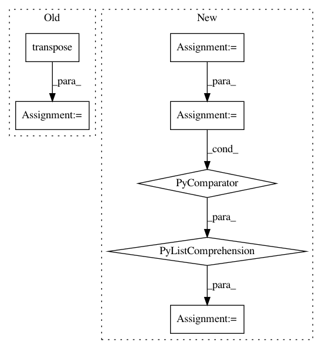

1ef3ad90a3423ed15ca41e0ea4e81012ebe84a9f,catalyst/data/scripts/project_embeddings.py,,main,#Any#Any#,88
Before Change
[load_image(name, args.img_size) for name in image_names], axis=0
)
img_data = (
img_data.transpose((0, 3, 1, 2)) / 255.0 // noqa: WPS432
).astype(np.float32)
img_data = torch.from_numpy(img_data)
else:
img_data = None
summary_writer = SummaryWriter(args.out_dir)
After Change
if args.num_rows is not None:
indices = np.random.choice(len(df), args.num_rows)
features = features[indices, :]
df = df.iloc[indices]
if args.img_col is not None:
img_data = _load_image_data(
rootpath=args.img_rootpath, paths=df[args.img_col].values
)
else:
img_data = None
summary_writer = SummaryWriter(args.out_dir)
metadata = df[meta_header].values.tolist()
metadata = [
[
str(text)
.replace("\n", " ")
.replace(r"\s", " ")
.replace(r"\s\s+", " ")
.strip()
for text in texts
]
for texts in metadata
]
assert len(metadata) == len(features)
summary_writer.add_embedding(
features,
metadata=metadata,
In pattern: SUPERPATTERN
Frequency: 3
Non-data size: 7
Instances
Project Name: catalyst-team/catalyst
Commit Name: 1ef3ad90a3423ed15ca41e0ea4e81012ebe84a9f
Time: 2020-08-11
Author: scitator@gmail.com
File Name: catalyst/data/scripts/project_embeddings.py
Class Name:
Method Name: main
Project Name: GPflow/GPflow
Commit Name: a1d15164eceb07b8c98e95df75e540467524a384
Time: 2018-01-04
Author: james@prowler.io
File Name: gpflow/likelihoods.py
Class Name: SwitchedLikelihood
Method Name: _partition_and_stitch
Project Name: GPflow/GPflow
Commit Name: 921362e76cc476d008c78f390b61db4a280c7c73
Time: 2016-06-24
Author: james.hensman@gmail.com
File Name: GPflow/likelihoods.py
Class Name: MultiClass
Method Name: predict_mean_and_var